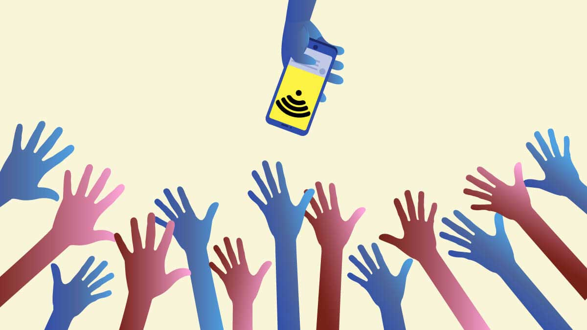

Defining the Internet and Society
Ibelieve there is no better scenario or situation to look at other than the COVID-19 pandemic to highlight the importance and exclusion of the internet and society. The year 2020 proved to be a game changer, eye-opener and hardest year for everyone all over the world due to the massive change it came with. We have seen how we no longer just live physical lives but have digital personas as well. Many parts of society started living more online than in the physical space as the digital space expands so does the divide that it creates as many of the people who were unable to adjust and migrate into these digital spaces are left behind.The societies left behind are not left because they choose not to engage but rather because of a lack of internet access. The United Nations and the Amnesty International organisation recognized that internet access is a basic human right and the pandemic has strongly strengthened this view that free internet should be accessible to all members of an organized society (Kasapis, 2020). The internet is no longer just a place to connect, share and find information, it is part of our existence and daily lives where schools and the working class have resorted to e-learning and teleworking. The lack of access is mainly affecting the disadvantaged and causes a digital divide where some societies are not evolving as rapidly as others are (Glynos, 2020).
Society is governed by a set of rules and conventions which shape the daily lives of individuals, and the internet has become a big part of our daily lives. The unequal access to the internet shows an active exclusion of the disadvantaged and marginalised and this can cause major issues as the modern society develops and evolves others are eft behind and not benefiting from new education methods, new health care services and jobs. This issue of digital exclusion has become a social justice issue with factors such as high prices, weak digital literacy and infrastructure being the biggest contributors.
Design Justice
The new digital age may have come in with many opportunities in many aspects however it has also aggravated already existing prejudices which causes and even bigger gap in the digital economy. Justice is needed for the disadvantaged individuals and there is already organisations that have started this journey of embodying and practicing design justice such as The Design Justice Network. This is a group of designers, artists, technologists and community organizers who came together and formulated principles that seek to liberate oppressive systems (Anon., 2016).
The lack of representation of marginalized groups in the tech community has been a big contribution to discriminative systems and bias technology. The very people that oppressed the marginalized are the very people creating these technologies and systems therefore these biases have been adapted in the technology. Design Justice simply put means in my opinion designing technology for justice, to bridge the gap of the digital inequalities that have manifested into the new digital age. Design justice could also help with many societies equally contributing in information generation and give them the right to write about their own experiences.
Conclusion
The internet is not a bad place itself but rather it is what it is due to its users, and the data it contains. Many organizations and institutes are aiming to ensure fair democratic digital societies through frameworks and principles that are guided by human rights and the internet is free for all and therefore everyone must have a say.
Bibliography
Anon., 2016. Design Justice Network. [Online] Available at: https://designjustice.org/ [Accessed 7 June 2022]. Glynos, M. T. &. D., 2020. Digital Divide Widens. Institute for Internet, Society & the Just Society, 10 May, pp. 1-6. Kasapis, S., 2020. Internet Access is a Fundumental Right. Espesially, Amidst a Pandemic. Institute for Internet, Society & the Just Society, 19 May, pp. 1-5. Tractinsky, M. H. &. N., 2011. User experience - a research agenda. 04 March, pp. 92-97.